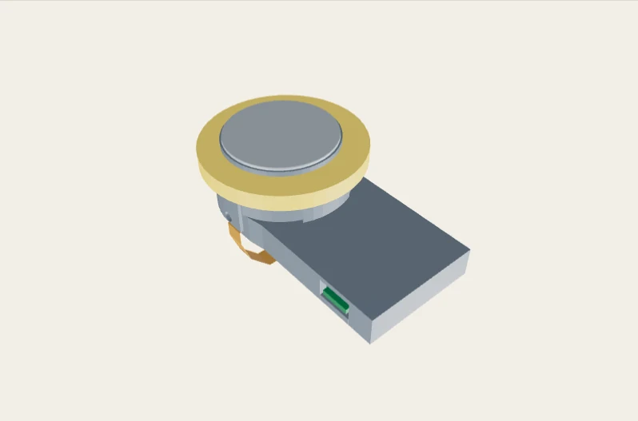

Contact surface
A PDMS elastomer with a silver-powder coating covers the planar acrylic window.
TACTILE SENSOR
A compact vision-based tactile sensor with a detachable optical stack for wearable UMI and robot grippers.
Read the AetheRock paper
Drag to orbit, scroll or pinch to zoom, and click a part to identify it. Use the arrow keys to orbit when the view has focus.
The STEP release includes the sensor, molds, and calibration tools. The commercial camera and upstream lighting appear as simplified clearance references. The archives link to the upstream hardware.
A PDMS elastomer with a silver-powder coating covers the planar acrylic window.
An OV5647 fisheye camera observes the contact surface under internal illumination.
The detachable stack can be used on AetheRock or on a robot gripper.
The optics and PCB design draw on GelSlim 4.0. The 9DTact reference documents the OV5647 camera module.